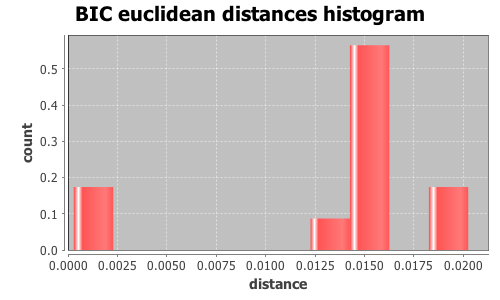
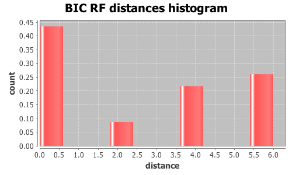

Application Meta
jModeltest 2.1
(c) 2011-onwards D. Darriba, G.L. Taboada, R. Doallo and D. Posada,(1) Department of Biochemistry, Genetics and Immunology
University of Vigo, 36310 Vigo, Spain.
(2) Department of Electronics and Systems
University of A Coruna, 15071 A Coruna, Spain.
e-mail: ddarriba@udc.es, dposada@uvigo.es
Wed Aug 26 18:02:21 EDT 2015
Mac OS X 10.10.5, arch: x86_64, bits: 64, numcores: 4
| Citation: | Darriba D, Taboada GL, Doallo R and Posada D. 2012. "jModelTest 2: more models, new heuristics and parallel computing". Nature Methods 9, 772. |
 Back to top
Back to top Settings
Arguments = -d group3/group3.txt.gene_275.phy -s 3 -i -g 4 -f -BIC -tr 7 -o group3out/g3outgene_275.txtInput Alignment: "group3/group3.txt.gene_275.phy"
NumTaxa = 17
Length = 1,584
Phyml version = 3.0
Phyml binary = PhyML_3.0_macOS_i386
Candidate models = 24
number of substitution schemes = 3
including models with equal/unequal base frequencies (+F)
including models with/without a proportion of invariable sites (+I)
including models with/without rate variation among sites (+G) (nCat = 4)
Optimized free parameters (K) = Substitution parameters + 31 branch lengths + topology
Base tree for likelihood calculations = Maximum Likelihood
Tree topology search operation = NNI
Model Optimization Results
| ID | Name | Partition | -lnL | p | fA | fC | fG | fT | ti/tv | R(a) | R(b) | R(c) | R(d) | R(e) | R(f) | p-inv | shape |
|---|---|---|---|---|---|---|---|---|---|---|---|---|---|---|---|---|---|
| 1 | JC | 000000 | 3551.0321 | 32 | - | - | - | - | - | - | - | - | - | - | - | - | - |
| 2 | JC+I | 000000 | 3528.6238 | 33 | - | - | - | - | - | - | - | - | - | - | - | 0.7220 | - |
| 3 | JC+G | 000000 | 3527.7966 | 33 | - | - | - | - | - | - | - | - | - | - | - | - | 0.1870 |
| 4 | JC+I+G | 000000 | 3525.9946 | 34 | - | - | - | - | - | - | - | - | - | - | - | 0.5500 | 1.0060 |
| 5 | F81 | 000000 | 3539.4562 | 35 | 0.2363 | 0.2121 | 0.2650 | 0.2867 | - | - | - | - | - | - | - | - | - |
| 6 | F81+I | 000000 | 3517.1666 | 36 | 0.2365 | 0.2120 | 0.2655 | 0.2860 | - | - | - | - | - | - | - | 0.7210 | - |
| 7 | F81+G | 000000 | 3516.3532 | 36 | 0.2363 | 0.2122 | 0.2653 | 0.2863 | - | - | - | - | - | - | - | - | 0.1900 |
| 8 | F81+I+G | 000000 | 3514.6021 | 37 | 0.2364 | 0.2120 | 0.2655 | 0.2860 | - | - | - | - | - | - | - | 0.5620 | 1.0350 |
| 9 | K80 | 010010 | 3486.4876 | 33 | - | - | - | - | 2.5586 | - | - | - | - | - | - | - | - |
| 10 | K80+I | 010010 | 3460.5169 | 34 | - | - | - | - | 2.8739 | - | - | - | - | - | - | 0.7320 | - |
| 11 | K80+G | 010010 | 3459.9670 | 34 | - | - | - | - | 2.8512 | - | - | - | - | - | - | - | 0.1510 |
| 12 | K80+I+G | 010010 | 3458.0778 | 35 | - | - | - | - | 2.8978 | - | - | - | - | - | - | 0.5600 | 0.8980 |
| 13 | HKY | 010010 | 3473.8342 | 36 | 0.2351 | 0.2108 | 0.2654 | 0.2887 | 2.5590 | - | - | - | - | - | - | - | - |
| 14 | HKY+I | 010010 | 3448.0891 | 37 | 0.2347 | 0.2111 | 0.2658 | 0.2884 | 2.8774 | - | - | - | - | - | - | 0.7310 | - |
| 15 | HKY+G | 010010 | 3447.5459 | 37 | 0.2348 | 0.2111 | 0.2658 | 0.2884 | 2.8512 | - | - | - | - | - | - | - | 0.1540 |
| 16 | HKY+I+G | 010010 | 3445.6763 | 38 | 0.2347 | 0.2111 | 0.2659 | 0.2883 | 2.9044 | - | - | - | - | - | - | 0.5620 | 0.9200 |
| 17 | SYM | 012345 | 3481.2685 | 37 | - | - | - | - | - | 0.8041 | 3.2591 | 0.5435 | 0.3050 | 3.7530 | 1.0000 | - | - |
| 18 | SYM+I | 012345 | 3455.6611 | 38 | - | - | - | - | - | 0.7893 | 3.3430 | 0.5324 | 0.2469 | 4.0857 | 1.0000 | 0.7300 | - |
| 19 | SYM+G | 012345 | 3455.0926 | 38 | - | - | - | - | - | 0.7890 | 3.3286 | 0.5326 | 0.2497 | 4.0460 | 1.0000 | - | 0.1550 |
| 20 | SYM+I+G | 012345 | 3453.1868 | 39 | - | - | - | - | - | 0.7832 | 3.3502 | 0.5345 | 0.2390 | 4.1053 | 1.0000 | 0.5500 | 0.8650 |
| 21 | GTR | 012345 | 3469.2792 | 40 | 0.2370 | 0.2100 | 0.2671 | 0.2859 | - | 0.9960 | 3.5871 | 0.5804 | 0.3580 | 4.2832 | 1.0000 | - | - |
| 22 | GTR+I | 012345 | 3443.8561 | 41 | 0.2364 | 0.2100 | 0.2681 | 0.2855 | - | 1.0453 | 3.8049 | 0.5768 | 0.3069 | 4.8019 | 1.0000 | 0.7280 | - |
| 23 | GTR+G | 012345 | 3443.2721 | 41 | 0.2364 | 0.2100 | 0.2680 | 0.2855 | - | 1.0417 | 3.7824 | 0.5774 | 0.3097 | 4.7504 | 1.0000 | - | 0.1580 |
| 24 | GTR+I+G | 012345 | 3441.3827 | 42 | 0.2363 | 0.2101 | 0.2682 | 0.2854 | - | 1.0422 | 3.8238 | 0.5807 | 0.2987 | 4.8405 | 1.0000 | 0.5540 | 0.8970 |
There are 7 different topologies. The following table shows the models supporting each topology and the rank according to each Information Criterion, as well as Robinson-Foulds and Euclidean distances with the tree of the best-fit model.
| ID | Models | Topology | AIC | BIC | AICc | DT | |
|---|---|---|---|---|---|---|---|
| 0 |
K80+G K80+I+G HKY+I HKY+G HKY+I+G SYM SYM+I SYM+G SYM+I+G GTR GTR+I+G
|
RANK | - | 0 | - | - | |
| Weight | - | 0.9329 | - | - | |||
| RF | - | 0 | - | - | |||
| AVG Distance | - | 7.9930e-03 | - | - | |||
| Distance VAR | - | 4.8342e-05 | - | - | |||
| 1 |
F81+I+G
|
RANK | - | 1 | - | - | |
| Weight | - | 0.0000 | - | - | |||
| RF | - | 2 | - | - | |||
| AVG Distance | - | 1.4883e-02 | - | - | |||
| Distance VAR | - | 0.0000e+00 | - | - | |||
| 2 |
GTR+G
|
RANK | - | 2 | - | - | |
| Weight | - | 0.0000 | - | - | |||
| RF | - | 2 | - | - | |||
| AVG Distance | - | 1.6207e-02 | - | - | |||
| Distance VAR | - | 0.0000e+00 | - | - | |||
| 3 |
JC+I F81+I
|
RANK | - | 3 | - | - | |
| Weight | - | 0.0000 | - | - | |||
| RF | - | 4 | - | - | |||
| AVG Distance | - | 1.5101e-02 | - | - | |||
| Distance VAR | - | 7.7146e-10 | - | - | |||
| 4 |
JC+I+G
|
RANK | - | 4 | - | - | |
| Weight | - | 0.0000 | - | - | |||
| RF | - | 4 | - | - | |||
| AVG Distance | - | 1.4609e-02 | - | - | |||
| Distance VAR | - | 0.0000e+00 | - | - | |||
| 5 |
K80+I GTR+I
|
RANK | - | 5 | - | - | |
| Weight | - | 0.0671 | - | - | |||
| RF | - | 4 | - | - | |||
| AVG Distance | - | 1.4676e-02 | - | - | |||
| Distance VAR | - | 2.1178e-10 | - | - | |||
| 6 |
JC JC+G F81 F81+G K80 HKY
|
RANK | - | 6 | - | - | |
| Weight | - | 0.0000 | - | - | |||
| RF | - | 6 | - | - | |||
| AVG Distance | - | 1.8337e-02 | - | - | |||
| Distance VAR | - | 5.0785e-06 | - | - |
BIC Selection Results
Model selected
| Model | HKY+G | ||
|---|---|---|---|
| partition | 010010 | ||
| -lnL | 3447.5459 | ||
| K | 37 | ||
| freqA | 0.2348 | R(a) | - |
| freqC | 0.2111 | R(b) | - |
| freqG | 0.2658 | R(c) | - |
| freqT | 0.2884 | R(d) | - |
| ti/tv | 2.8512 | R(e) | - |
| R(f) | - | ||
| p-inv | - | gamma | 0.1540 |
Best model tree
((((((I0151:0.00454191,I0148:0.00260991):0.00126627,(((I0135:0.00585272,I0127:0.00129917):0.00062612,((I0141:0.00711141,I0068:0.00325292):0.00137689,I0067:0.00144470):0.00000020):0.00064181,I0147:0.00855335):0.00063948):0.00000005,(I0152:0.00323658,I0144:0.00196820):0.00127611):0.00064342,I0076:0.00129220):0.00000005,(I0158:0.01344244,((I0075:0.00443003,I0149:0.00000007):0.00073387,I0150:0.00322624):0.00064524):0.00063411):0.00209453,I0111:0.08056766,I0119:0.00242752);
Display best model tree in PhyloWidget
| Model | -lnL | K | BIC | delta | weight | cumWeight |
|---|---|---|---|---|---|---|
| HKY+G | 3447.5459 | 37 | 7167.6969 | 0.0000 | 0.4572 | 0.4572 |
| HKY+I | 3448.0891 | 37 | 7168.7835 | 1.0866 | 0.2656 | 0.7228 |
| K80+G | 3459.9670 | 34 | 7170.4361 | 2.7392 | 0.1162 | 0.8391 |
| HKY+I+G | 3445.6763 | 38 | 7171.3256 | 3.6287 | 0.0745 | 0.9136 |
| K80+I | 3460.5169 | 34 | 7171.5358 | 3.8389 | 0.0671 | 0.9806 |
| K80+I+G | 3458.0778 | 35 | 7174.0253 | 6.3284 | 0.0193 | 1.0000 |
| GTR+G | 3443.2721 | 41 | 7188.6203 | 20.9233 | 0.0000 | 1.0000 |
| GTR+I | 3443.8561 | 41 | 7189.7882 | 22.0913 | 0.0000 | 1.0000 |
| SYM+G | 3455.0926 | 38 | 7190.1582 | 22.4613 | 0.0000 | 1.0000 |
| SYM+I | 3455.6611 | 38 | 7191.2952 | 23.5982 | 0.0000 | 1.0000 |
| GTR+I+G | 3441.3827 | 42 | 7192.2091 | 24.5122 | 0.0000 | 1.0000 |
| SYM+I+G | 3453.1868 | 39 | 7193.7142 | 26.0173 | 0.0000 | 1.0000 |
| HKY | 3473.8342 | 36 | 7212.9060 | 45.2091 | 0.0000 | 1.0000 |
| K80 | 3486.4876 | 33 | 7216.1096 | 48.4127 | 0.0000 | 1.0000 |
| GTR | 3469.2792 | 40 | 7233.2668 | 65.5699 | 0.0000 | 1.0000 |
| SYM | 3481.2685 | 37 | 7235.1421 | 67.4452 | 0.0000 | 1.0000 |
| F81+G | 3516.3532 | 36 | 7297.9440 | 130.2471 | 0.0000 | 1.0000 |
| JC+G | 3527.7966 | 33 | 7298.7276 | 131.0307 | 0.0000 | 1.0000 |
| F81+I | 3517.1666 | 36 | 7299.5706 | 131.8737 | 0.0000 | 1.0000 |
| JC+I | 3528.6238 | 33 | 7300.3820 | 132.6851 | 0.0000 | 1.0000 |
| F81+I+G | 3514.6021 | 37 | 7301.8095 | 134.1126 | 0.0000 | 1.0000 |
| JC+I+G | 3525.9946 | 34 | 7302.4912 | 134.7943 | 0.0000 | 1.0000 |
| F81 | 3539.4562 | 35 | 7336.7822 | 169.0853 | 0.0000 | 1.0000 |
| JC | 3551.0321 | 32 | 7337.8309 | 170.1340 | 0.0000 | 1.0000 |
| -lnL: | negative log likelihod |
| K: | number of estimated parameters |
| BIC: | Bayesian Information Criterion |
| delta: | BIC difference |
| weight: | BIC weight |
| cumWeight: | cumulative BIC weight |
Confidence interval
There are 24 models in the 100.00% confidence interval:
HKY+G HKY+I K80+G HKY+I+G K80+I K80+I+G GTR+G GTR+I SYM+G SYM+I GTR+I+G SYM+I+G HKY K80 GTR SYM F81+G JC+G F81+I JC+I F81+I+G JC+I+G F81 JC

Euclidean distances histogram from each model optimized tree to HKY+G tree.
Euclidean distances histogram from each model optimized tree to HKY+G tree.

Robinson-Foulds distances histogram from the different topologies to HKY+G topology.
Robinson-Foulds distances histogram from the different topologies to HKY+G topology.